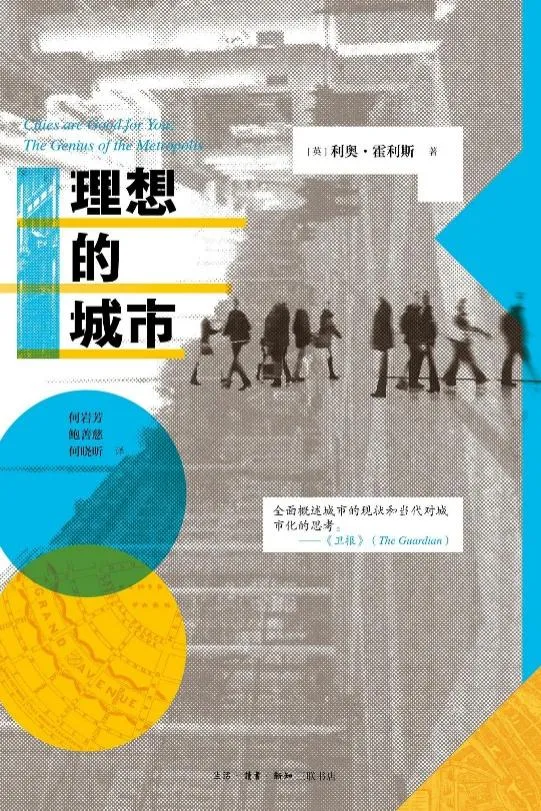
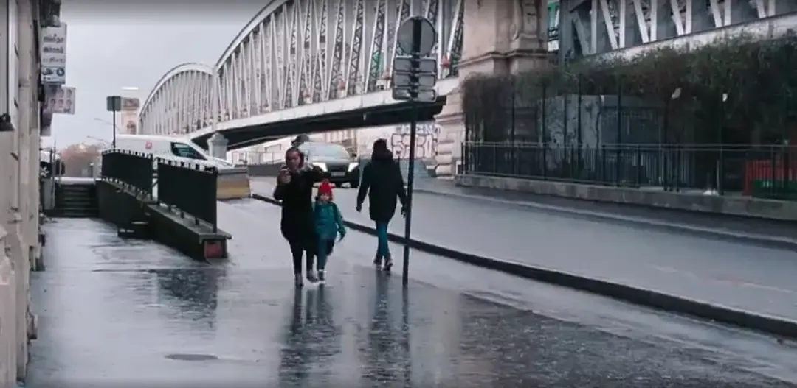
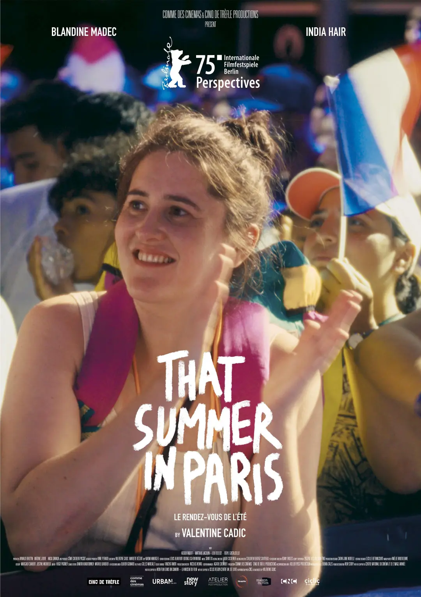
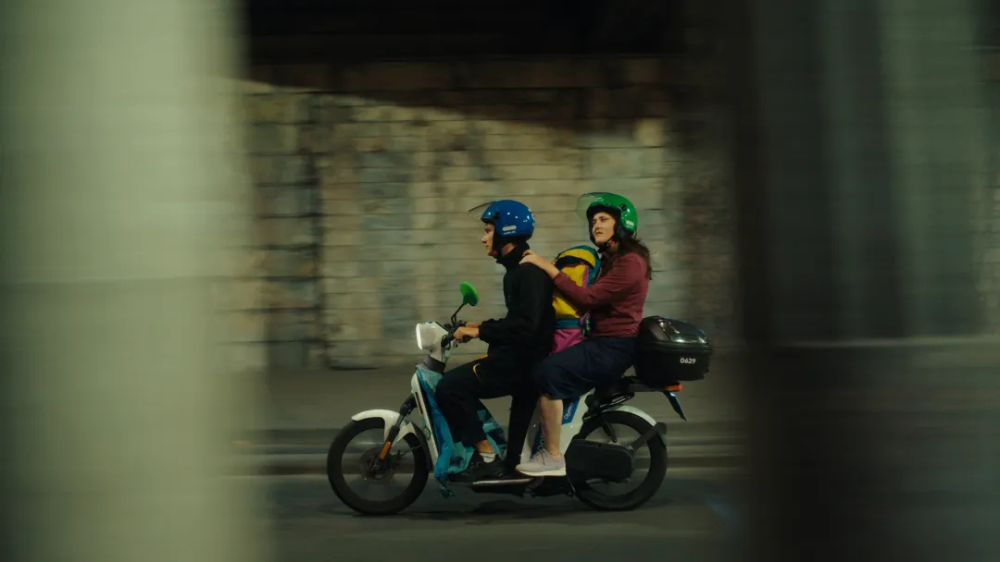
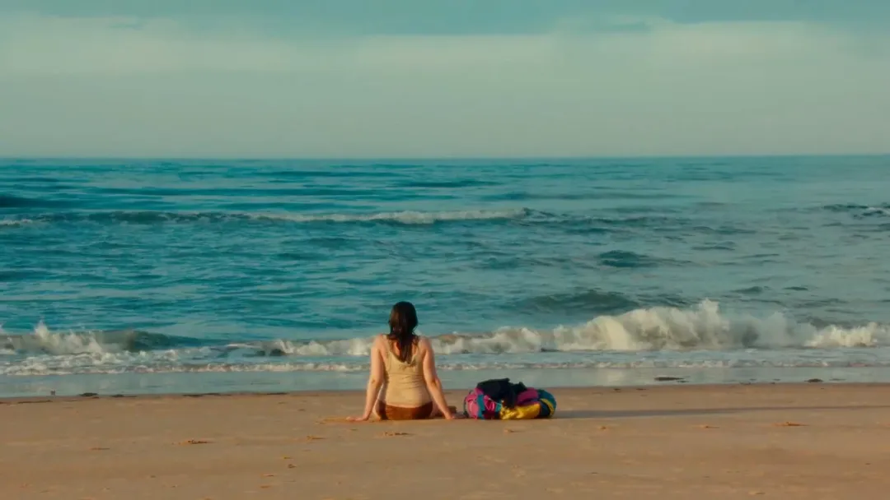
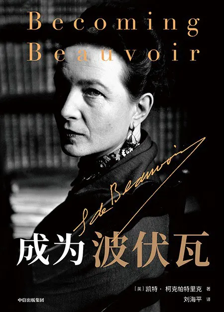
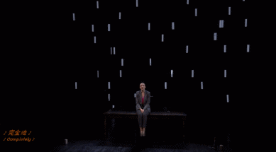
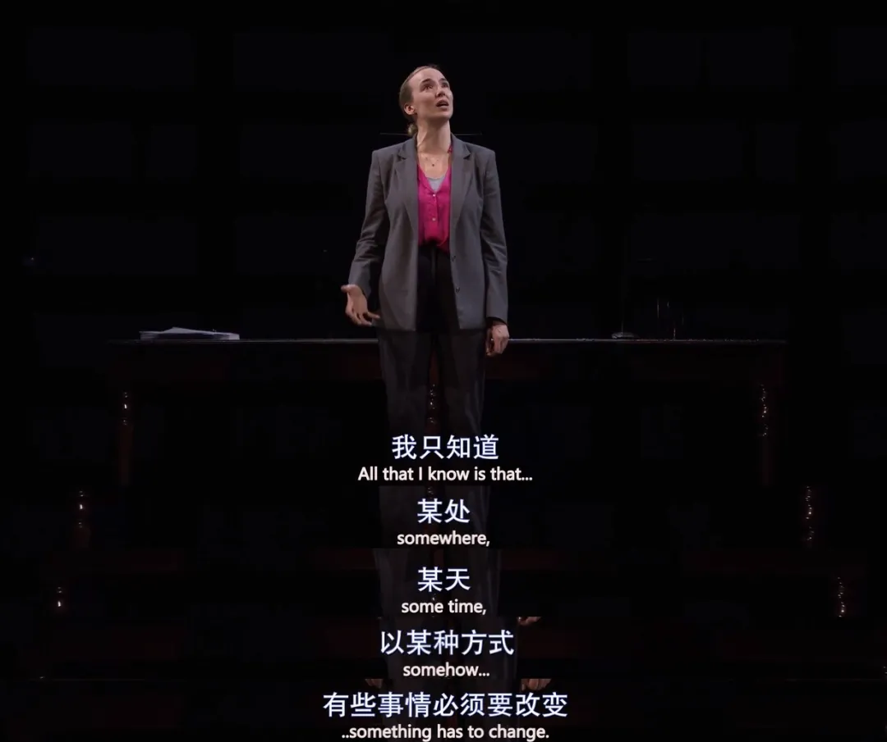
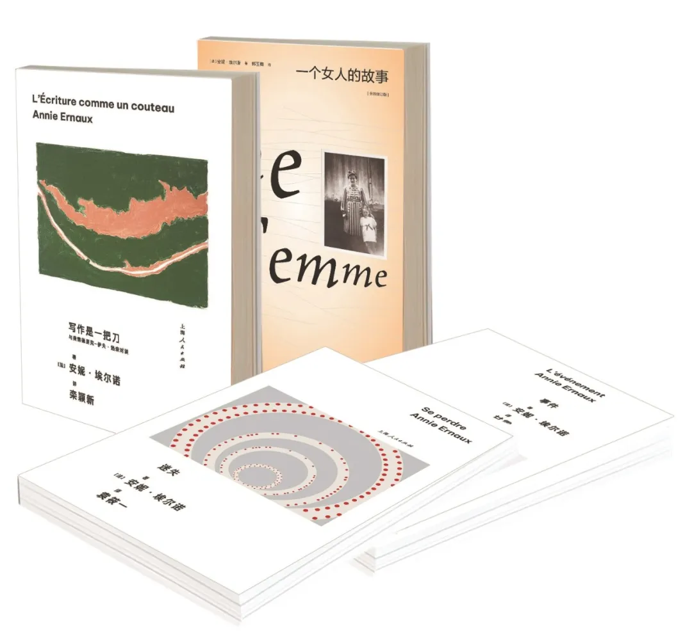

《理想的城市》
再次思考城市这个话题 --2025.11.27 读后感

在思考定居地时，我读到了这本《理想的城市》。当然，它并不会告诉我上海和杭州哪一个更理想，而更像一本散文式的城市理论变迁史。书中反复提及《美国大城市的死与生》，让我想起前些年读过的那些关于人与城市的书，和写过的文章《北京出租车大爷的谩骂里》《看不见的城市》。
如今，这个问题又一次摆在我面前：人该如何选择一个适合自己的城市？
对我来说，一座城市不该只是工作的地方，还应该有生活。所以答案或许是：它需要具备适合聚会、交流、观察与思考的公共空间——比如图书馆、咖啡馆、书店、公园，以及有树的街道。
如果想在上海拥有满足这些条件的住房，成本中其实也包含了对公共空间的使用权。而居住权加上这种使用权，真的值得吗？
在上海购置这样一处住房成本高昂，而这种高昂的成本会让我不得不高度投入工作，从而减少享受生活和公共空间的时间。这像是一种互相损耗，在我看来回报并不理想。
生活感也来自于一种日常的节奏。它可以是固定去某个地方做某件事，也可以由一组物品串联成记忆。这种日常会形成一种仪式感，滋养心灵。而眼下我的生活流动不居，缺乏这样的仪式与滋养。

几年前的一个周末，我独自去了杭州老城区一家开了十来年的咖啡馆。门口有棵郁郁葱葱的大树，隔壁是菜市场和另一家咖啡馆。街道两旁饭馆和小店林立，老小区门口老人和孩子来来往往，烟火气十足。我沿路走过一片社区街道，绿树成荫，拐角处有一家很小的咖啡馆。
那天并没有发生什么特别的事，我却印象很深。那是一种充满生活味的感觉。那种寻常的烟火气，在最近这几年里对我而言并不寻常，所以一直记得。
这几年我好像一直在攀登一座高塔——在一个路径明确向上的结构中，获取每一层的激励，再继续向上。就像在梵蒂冈大教堂登顶时的螺旋石梯，狭窄、古老，几乎容不下两人并行。登顶后可以俯瞰整个罗马城，风很大，视野开阔，阳光灼热。
中途我曾背离这条路径，走入创业的选择，像是踏入一个广场。那里喧闹，看似无序，打交道的人也更加参差。他们未必有高塔中的人那样有知识、优秀，逻辑时常混乱，思维也往往简单。我曾以为这样的生活是更好、更平等的。
但亲身经历后才明白，一切远非想象中那么简单。广场虽然自由，却未必带来智识的碰撞，更多时候只是一片盲从的热闹。高塔虽然狭窄，却有着高度秩序带来的安定感。
我的生活，其实是在攀登高塔的过程中，也时时走下塔来，在广场上散心，在街道中漫步——最终由无数这样的片段交织而成。我理想的生活，大概就是这样复杂而流动的过程。
《巴黎夏日》
选择一种不瞩目的生活 --2025.11.22 观后感

谁会想到呢——看到女主角坐在泳池电工的摩托车后座，微笑着感受风，抬起头时候，我会流下泪来。那一刻她是不讨好的，只是全然自在，纵然生活有那么多不如意、窘迫的时刻，她依然能触摸到那样片刻的平静。

她很平静。即使因为行李太大而被拒于游泳比赛的场馆之外，即使在生日次日被青年旅舍驱赶，即使面对姐姐突然的情绪崩溃——她都依旧平静地与这些纷扰保持着某种距离。
那是第一次流泪，而后眼泪就没有停过。第二次泪涌，是她对偶遇的男子说自己不是来寻找爱情的，而对方没有多言的时候。他也有一些笨拙，带着沉思，以及一种理解。那不是睿智的沉思，而是一种恰到好处的懂得。我很喜欢这一段偶遇：不激情、不冲动、不色情，始终保持着彼此的边界。
两人在河边睡醒，犹如神迹般，河对岸出现了那个唯一的符号化的人物——女主最喜欢的游泳明星，她在遛狗，她们就这样平静地相望，招了招手。这个时刻，没有任何人见证，没有任何人看见，但是我想会留在她心里一辈子。
我开始反思：为什么我们如此渴望被看见、被承认？社交媒体上的喧嚣，与这一幕形成了剧烈的反差。原来生活本可以是这样的——一种不被瞩目的、安静的存在。而我们，似乎已快忘了这种可能。
我发现自己早已陷入一种“中心化”的生活。每一个选择仿佛都在朝着某个中心靠拢——上海是中心，我便来到上海；静安是中心，我便想留在静安。工作里也有core群，一个core套一个core。这个电影让人意识到自己对core的向往，让生活日渐同质化，也让停下来的脚步变得异常艰难。
这部电影的另一个珍贵之处在于：它并非没有安排偶遇、意外、冲突，它全部安排了，但是它完全没有工业电影的成分，没有突出冲突，没有渲染情绪，没有刻意浪漫。一切都那么自然地呈现，恰如其分。它的反面，大概就是那些浮夸短剧吧，完全不同的感受。

这部电影是私人的，也是政治的。它关乎阶级、人际关系、生活方式的选择，也关乎制度的无形之手。或许，更准确地说——因为我们关注什么，就会从中看见什么。电影，最终成为我们对生活感受的投射。
《成为波伏瓦》
做有生命力的自己 --2025.09.14 读后感

在没读《成为波伏瓦》之前，对她的印象，是《第二性》里的那种犀利直白，是始终离不开萨特的绑定关系，是咖啡馆和酒馆高谈阔论的知识分子形象，是那几张经典的黑白肖像——冷静、遥远。
读过《成为波伏瓦》之后才发现，原来波伏瓦的20岁，也是充满好奇与困惑的20岁。她是如何成长为了后来的这个形象？如何处理复杂的关系？又如何拥有那么高的学术与写作产出？原来她也有过那么多犹豫、焦虑的时刻。她也有过反思过去、做出选择的变化。
但印象更深刻的是，她很聪明，对学业、工作、会面有着严格的时间规划，她极度自律，拥有清晰的规划和目标。这也正是我所向往并正在努力践行的能力——成为卓越的人，往往离不开这样的纪律。
了解她的人生后，我发现自己不再那么排斥做一个轮廓鲜明、甚至偶尔脾气急躁的女性。我曾希望自己“温柔而有力量”，现在想来，那其实是一种对完美的想象，渴望同时拥有所谓女性气质与男性气质的优点。却忽略了真实的自己，或许本就带着棱角——何必非要压抑这些鲜活的人性？
如今我更愿意这样想：我会克制自己不应发的脾气，在必要的场合保持得体，但这应当是一种选择，而非全方位的自我压抑。我不必追求成为完美的人，而应努力成为一个有风格、有态度的人。那才是真实的我。
允许自己犯错，允许自己偶尔暴躁，允许自己爱憎分明。你无法讨好所有人，也不必讨好这个世界。真正的力量，是成为能够吸引他人向你靠近的人，创造属于自己的磁场。
这才是你生命力的体现。
《初步举证》
改变既定规则，而不是当缩头乌龟 --2025.03.07 观后感
看《初步举证》的那个夜晚，是震撼的。
当不幸没有降临到自己身上的时候，很难真正设身处地理解受害者的处境。而看完了这个电影，我被那种挣扎与崩塌震撼了。
《初步举证》是一部极具力量的女性主义法庭剧。它讲述了一名事业有成、自信干练的女律师泰娜，在遭遇性侵后，从法律体系的捍卫者转变为绝望的挑战者的故事。
当一个结构体系完全由男性建立时，它怎么可能真正对女性有利？这一点，在任何领域其实都一样。

那么，该如何改变既定的规则？
通过文化与艺术的传播去影响更多人，是一种方式。我们不应沉默，而要勇敢发声、持续呐喊，召唤更多同行者，让彼此感到不再孤单。就像朱虹璇创办的话剧九人那样。
通过身体力行的实践去改变现状、建立新的小规则，也是一种方式。我们应当努力在各个领域站稳脚跟、拥有话语权，进而推动旧规则的改变。无数微小的变革最终会联结起来，成为坚实而持久的转变。
想到这里，我更意识到自己所受的专业训练、思维习惯，本身就是一种潜在的力量。它让我有能力在领域内深耕、前行。只要减少无谓的内耗与自我怀疑，我便可以在安稳立身的同时，走向能发挥更大影响的位置，从而有能力为更多女性从业者争取权益、改善环境、推开那扇门。

我们或许无法一夜之间重塑体系，但可以从每一次发声、每一次选择、每一次站立开始。不做沉默的旁观者，而做规则的挑战者与重建者。这条路注定不易，但《初步举证》告诉我们：唯有直面问题、勇敢行动，改变才会发生。
《写作是一把刀》
写作是一种政治介入 --2025.02.23 读后感

2025年2月23日，一个阴天的周日，我在家读完了安妮·埃尔诺的《写作是一把刀》。
对安妮·埃尔诺来说，写作是政治的。她在书中说：“并不是因为有了社会经验，也不是因为有了社会意识，就能自动过渡到一种政治意识。我感觉在我去鲁昂读高三之前，社会经验、社会意识和政治意识都没有被我联系到一起。”正是在高三那年，在老师的影响下，她读到了波伏娃的《第二性》，从此开始意识到性别问题即是政治问题。这比我早得多——我直到工作后，二十五岁才读到《第二性》。在那之前，我都以为生活是唯我的，不问政治的。
写作，因此成为一种政治介入。它意味着揭露被遮蔽的生活真相，意味着面对风险、扰乱既有的秩序，也意味着必须应对那个始终“监视”着女性言行与书写的社会与文学评价体系。因为：
“在我看来，扰乱秩序是有必要的：多少个世纪以来，女性一直觉得大部分由男性创作的文学所提供的关于男性、女性和世界的表现形式是合法的？现在轮到男人去努力了，男人们应该接受女性所创作的文学所提供的表现跟他们所做的一样，也“具有普遍性”，这个过程一定是十分漫长的…因为目前大量男性写的小说正在对女性起作用，这不是说刻板印象变得太明显，而是男性正在静悄悄地巩固他们的权力和自由，他们正在表明只有他们才配谈论普遍性。男性中心主义最外显的形式——我想到了米歇尔·维勒贝克——未必是最坏的情况，最坏的是以讨人喜欢的形式出现的、看不出来男性中心主义的东西，它们深刻地、顽固地融入个人思考和感受的方式，包括女性思考和感受的方式。”
——最坏的那种，正是以讨人喜欢的形式出现、不易被察觉的男性中心主义。比如当下的许多偶像剧，它们往往包裹着浪漫、梦幻的外衣，却暗中传递着性别角色的刻板印象，将女性置于被凝视、被拯救、被定义的位置，让不平等的关系模式显得自然而然、甚至令人向往。不要不加审视地接受一切糖果，因为这种隐蔽的叙事，比直白的歧视更持久，也更难破除。
**对安妮·埃尔诺而言，写作需要时间，需要日常，需要他人。**这种理解，也缓解了我偶尔写不下去的焦虑——写作本就应当允许中断，人不是只写作的。
写作的状态总是与那一时期的生活状态紧密相连：若我痛苦，笔下便多是内心独白；若我快乐，文字就容易流淌出温暖的片段；若我疲于奔命、感受麻木，自然也就无话可写。这恰好解释了为什么过去三年，我忙于工作与学习，写得那样少。读到她这样的感受，我对自己也少了一些责备。
新的一年，也继续阅读下去吧，去看这参差，也去写这参差的世界。